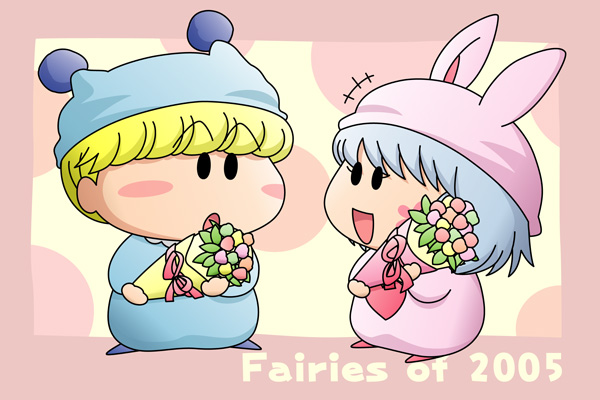

大変遅くなりましたが、２００５年１２月にムルモ屋本舗の掲示板上で行いました企画第５弾『あなたが思う２００５年に活躍した妖精は誰？』の結果を本記事にて報告します(^^)。
■ルール
２００５年のアニメミルモで活躍したと思う妖精を５位、４位、３位、２位、１位の順に５人選びます。皆さんからの投票により各キャラに以下のpointが加算され、最もpointの高い妖精を２００５年ベストオブ妖精に認定します。
| １位 … 10point |
| ２位 … 8point |
| ３位 … 6point |
| ４位 … 4point |
| ５位 … 2point |
■結果発表
skmさん、multalさん、koさん、ミルグルさん、レインボーさん、ミクさん、高祁憂茄さん、蒼ちゃん、アコモさん、そして私からの投票により以下の順位となりました♪
| １位 | 78point | パピィ |
| ミルモ | ||
| ３位 | 52point | リルム |
| ４位 | 36point | ヤシチ |
| ５位 | 32point | パンタ |
| ６位 | 14point | ムルモ |
| ７位 | 8point | サスケ |
| ８位 | 2point | ハンゾー |
なんと１位が２人いるという大激戦(^^)。主人公ミルモの活躍は言うまでもありませんが、ちゃあみんぐでのパピィのアピール度もとても高かったことが証明されましたね。ムルモからキスされたりと、ムルモとのラブラブ度が順調に上向いているのもとても微笑ましかったです。それではいつものように１位の２名を登場させた絵を描いてみました。
ミルモ＆パピィ(2)

パピィ「わたちが２００５年ベストオブ妖精に選ばれるなんて…。
住ちゃんをたっぷり応援した甲斐があったわ！」
ミルモ「オレとパピィが同じポイント数で１位だなんて聞いてねぇぞ。
クリスタルランドを救ったり、楓の恋を実らせたりと大活躍なのに
ムルモ屋本舗はいったいどうなってんだ！？」
パピィ「ミルモたんの主役の座もそろそろ危ないってことね。
これからの主役はわたちなんだから！」
ミルモ「あ～ん？パピィにはムリに決まってんだろう？
主役には生まれながらの気品とカッコ良さと熱いハートってやつが…」
パピィ「あら、じゃあミルモたんの主役らしいところを見せてもらおうじゃないの」
ミルモ「おぅ、まぁ見て驚くなよ」
２００５年ベストオブ妖精の授賞式をイメージしてみました。１位の二人にはあらかじめ１位が二人いることは伝えられていなかったという設定で(^^;。活躍度を測ると２００５年はきっとミルモがダントツでトップになるはずで、ミルモ本人も当然のように思いこんでいたところになぜか隣にはパピィが…。
この二人、アニメでは直接会話を交わすシーンがほとんど無かったので、ムルモを挟んで距離があるような気がします。そして二人っきりになるシーンを無理矢理作ってみましたが（あくまで私の考えです）、まずはパピィの方からミルモに対して挑戦的な態度を取ってくれそうです(^^)。ヤシチを含む妖精忍者三人組をお馬鹿さんと呼ぶくらいだから、ミルモに対してもそんなに敬意は無いんだろうな(^^;。またミルモを「将来のお兄さん」と考えるような計算高いことはパピィには出来ないだろうというのもあります（汗）。
さてパピィに妙な約束をしてしまったミルモ、今年はどんな活躍を見せてくれるんでしょうね。ミルモが終了した今は、それは私たちミルモファンが考えることになるのですが、これはぜひ皆さんに聞いてみたいです(^^)。
絵は…構図が超手抜きですね(^^;。それを華やかな雰囲気でカバーしようと思ったのですが、それを実現するための背景が思い浮かばなくてさらに苦戦…。背景を賑やかにし過ぎるとミルモ＆パピィが目立たなくなるので、これくらいシンプルなのがちょうどいいのかな。
ここからは皆さんと私の投票カキコを再掲します。
★こやまる★
５位：パピィ
ちゃあみんぐでの騒ぎの原因は半分以上がパピィなんですよね。ムルモだけではなく楓までもがパピィのペース（策略）に乗せられてしまうなんて。ムルモとの恋の距離が少しずつ狭まったように見えた２００５年でした。
４位：ヤシチ
妖精ヨガに妖精エアロビが大好きという性格によりお茶目度アップ！ …と思いきや１６１話「大混戦！ ヒヨコウォーズ」ではいきなりムルモにしょっかくビームを浴びせられるひどい扱われよう(^^;。だけども、悲しんでいる安純のために新たな作戦を積極的に繰り出すヤシチは輝いて見えましたよね（１７０話「それぞれの決断」より）。
３位：ミルモ
脳波コントロールされたりパンタに怯えたりと散々でしたが、それを上回る活躍も盛りだくさん。楓の恋と引き替えに別れを選んだミルモはもちろん、タコスに裏切られつつも友情により許してしまう広い心も印象的でした。特に１５８話「はるかと摂」のラストでのミルモ流の励まし方は何度見ても素晴らしい！ でも…肝心なリルムへの愛はもう少し表に出して欲しかったなぁ。
２位：サスケ
１４０話「デビル忍者見参ダゼ！」での思い切った活躍が印象的ですね。まさかネズミ兄さんまでもをだますことに成功するとは！サスケの恋の結末は見れませんでしたが、その分別の妄想がふくらんだということで感謝の気持ちを込めて２位に。
１位：リルム
楓と結木の恋を実らせた真の立役者はリルムだと思っています。はっきりしない結木くんへのアドバイス、そしてノンストップなお節介があったからこそ。１６９話「パンタを救え！」にてオリの柵を「おりゃ」とひん曲げたワイルドなリルムが忘れられません。さらなる進化を遂げたリルムの料理も１位の秘訣ですね。
★skmさん★
５位：ムルモ
５位にはムルモがランクイン。ラベンダー色の恋妖精編でパピィにキスしてあげたり、ちゃあみんぐでは松竹君のツッコミ役として活躍してたからです。
４位：パンタ
４位にはパンタがランクイン。ちゃあみんぐから登場したパンタですが、とてもやさしく、『ぼくたんユーレイですっち』の最後の場面は感動的でした。それに『パンタを救え』では、はるかのために危険をおかしてまではるかを元気にしようとしたのもランクインした理由の一つです。
３位：ヤシチ
３位にはヤシチがランクイン。ヤシチは安純のために妖精木葉を使って恋をかなえさせようとして石になるところや、妖精エアロビクスでパピィとムルモに踏まれるところもまたおもしろかったです。
２位：ミルモ
そして惜しくも１位にとどかなかったミルモ。やっぱり印象的なのは最終回のひとつ前の話です。本当に泣きました。感動です。あと、主人公ということもあって出番が多く大体のおいしいところはミルモがとっている感じです。それもあるし、脳波コントロールにあやつられて、くもっちょでコントロールを破ったのも笑えました。
１位：パピィ
堂々の第１位はパピィ。こやまるさんと同じくぼくも騒ぎの原因はパピィにあると思います。それに一番笑えたのはパピィの行動です。ムルモにキスをせがむ時に、バンジージャンプを使ったり、住田のためにがんばるところ、ムルモと喧嘩したくないのにしてしまうところや、とにかくぼくの１位はパピィです。
★multalさん★
5位：ハンゾー
新妖精忍者のテーマソングも楽しく歌ってましたし、『ユーレイだぞ！ワルモ団！！』でワルモ団の抜け殻（？）で遊んでいたのに笑いました～。
4位：ヤシチ
『腹黒ストライク』でのミルモとのボウリング大会、久々のバトルシーンでおもしろかったです。あんなにたんこぶができるほどヤシチもよくやったものだなぁ…。
3位：パンタ
skmさんと同じくはるかにいろいろ手助けしたり、元気づけようとしたところが印象に残りました。
2位：ミルモ
『めざせ鼻の穴！』でのミルモ、ほんとよかったです＾＾。楓に呼ばれ正気に戻ったシーンがいまだに忘れられません。パートナーの絆はやはり強いなぁ。
1位：パピィ
やはり一番はパピィでしょう。ちゃあみんぐでレギュラー化し、住田くんの恋を一生懸命応援してるところからランク一位にしました。
★koさん★
5:ミルモ
楓との絆を再確認したちゃあみんぐのラストのストーリーはまさに感動的でした。でもやっぱり2005年は女性陣の活躍が大きかったということで残念ながら5位。
4:パンタ
森下を励ます姿がとても良かったです。そして最後は堂々漫画の題材にまでなってしまうほどの活躍ぶり。
3:パピィ
「栄光は100ｍ先にあるわ～！」などの活気があるセリフでちゃあみんぐではペースを勝手に持ってちゃう所がすごいパピィ。住田を積極的に楓に近づけさせた姿も印象的でした。
2:ヤシチ
安純に散々振り回されたヤシチですがそれでも安純のために頑張ろうとする姿は感動です。ちゃあみんぐでは、公式ホームページの「これまでの話」のキャラクターとして採用された。
1:リルム
やっぱリルムでしょう。積極的ではないですが、その分一言一言に結木を励ます気持ちが込められていました。そしてお菓子がさらにパワーアップしモンスターレベルに。どうやったらお菓子が動くようになるのか…その謎は彼女だけが知っている秘密…^^;。
★ミルグルさん★
５位：ヤシチ
扱いがひどくムルモやパピィにまでバカにされてましたが安純を励ます姿や身を捨てて願いをかなえそうとする姿に感動しました。
４位：パンタ
わずか半年でも存在感が十分だったパンタ。魔法で消しゴムになったり天国に行って願いをかなえてもらおうとしたり、いつもはるかのため頑張っていました。はるかが楓のことを疑い、その疑いをはらしたのもパンタの純粋な涙でした。
３位：リルム
楓と結城の恋のキューピット的存在特に結木に対しての言葉が大きいです。最後の決断もリルムの言葉がとても印象にのこります。
２位：ミルモ
やはり最終回の前の話でのミルモの行動ですね。楓を一生懸命探し回りワルモ団に見せた涙・・・消えてしまう前に叫んだ一言・・・私がミルモ史上一番感動しました。
１位：パピィ
そして１位はパピィです。ちゃあみんぐの台風の目と言っていいような活躍。１年目から出てるのに出番が少なかった彼女がちゃあみんぐではそのうっぷんを晴らす暴れっぷり！大胆な行動・強気・意外に強い腕力。凄いパワフルさを見せてくれました。ミルモと最後まで悩んだんですがインパクトが強いのでパピィに決まりました。
★レインボーさん★
５位ヤシチ殿
ミルモや安純に振り回されることが多かったですけど、自分の身を捨ててまでパートナーの願いを叶えようとするところは感動させられました。
４位リルムちゃん
楓と結木の恋を誰よりも応援していましたよね。結木にガツンと言ったあの言葉もいいです。楓と結木が結ばれた今、次なる目標はミルモの彼女になることでしょうね。
３位ムルモ君
いつもパピィと喧嘩してばかりですが「恋のかけ引きおしえまチュ」でパピィが妖精界へ帰ると言った時も条件を結ばせておきながら止めに行ってくれましたよね。「ラベンダー色の恋・妖精編」でもパピィにキスしてあげましたしね。やっぱりムルモもパピィのことが・・・。
２位ミルモ君
２位は主人公のミルモです。確かに脳波コントロールで操られたり、妖精じゃない姿になったりと悲惨な目によく遭いましたね。でもそれにくじけず前に進んでましたよね。「楓の願い、ミルモの想い」でワルモ団に捕まった時に見せた涙は半分騙しでもあるけど、もう半分は本当の涙だったと思います。あのミルモには泣かされましたよ。
１位パピィちゃん
わんだほうまではほとんど出番がなく脇役クラスだったパピィ。でもちゃあみんぐでレギュラーになってからは大活躍でした。ちゃあみんぐではほとんどの事件の元凶でしたからね。「結木ＶＳ住田！恋のラストターン」で住田が楓をあきらめた時にも住田の新しい相手を見つけるというパートナー思いの優しい奴だと気付きましたよ。涙を流した時はムルモも振り向いてくれましたしね。これでもうちょっと素直になれば・・・。
★ミクさん★
５位..ヤシチ
最後の最後まで安純にはこきつかわれっぱなしでしたがそれでもがんばっていた姿に心打たれました..。
４位..ムルモ
全体平均みると、ちゃあみんぐ編ではムルモッピの回とパピィとの対決でしか主に活躍しませんでしたが、最後まで可愛らしさをみせてくれたので努力賞の４位。
３位..パンタ
ミルモに甘えてばかりのパンタですが森下さんのためにパンタなりにがんばってる姿はとても見てて関心がありました。
２位..パピィ
ラベンダー色の恋の時にはムルモに率直な気持ちを伝えられ..?(喧嘩するほど中がいい)中のいい２人という印象が強かったです。
１位ミルモ
やっぱり１位はミルモきゅんです３年半お疲れ様というのが軽率な話になりますが、兎に角ミルモが総合的にみて心にぐっとくるような台詞を言う事が多かったのでそれが１位という順位です。我侭ながらもちゃんと筋の通った発言をする所が私に一番欲しいところであり、それがミルモの魅力ですwやっぱりミルモが一番。
★高祁憂茄さん★
5位 パンタ
いつもミルモにくっ付いてばかりだけど、体が弱かったのに、はるかが落ち込んでる時はいつも一生懸命で、はるかの役に立てたいとはるかの夢をかなうために頑張ったパンタ、スゴイ活躍でした！
4位 ヤシチ
『それぞれの決断』の時、色々安純に声をかけたヤシチ、マヌケだけどパートナーの様子が変なときに一生懸命声をかけて励ますヤシチはすごいです！ あと『楓の願い、ミルモの想い』の時に安純の願いをかなえられず、妖精木の葉を使ってしまったヤシチ、そのあともどったけど、最大の魔法を使うヤシチはそれを使いほど安純の役に立てたかったんでしょうね・・。（ぇ
3位 リルム
やはり3位はリルムですね！！ 楓と結木の恋が実ったのもリルムが色々一生懸命頑張ってくれたからかもしれません！というより2人の恋のキューピットですねｖｖ 『それぞれの決断』の時、結木にガツン！と言ったリルムの言葉がすごかったです！！
2位 ミルモ
2位は主人公のミルモです！！ 脳波コントロールで操られたり、妖精じゃない姿になったりと変な目によく会ったミルモだけどドンドン成長した感じがしますね！ 『楓の願い、ミルモの想い』でワルモ団にやられちゃった時に見せた涙は少し冗談もあったけど、少し本物だと思いますね。『はるかと摂』のラスト編では少し自信をなくした楓に色々言ってくれたり、『恋心、揺れてます』で結木がはるかと付き合ってるのを見て悲しい思いをした楓だけど、その時ミルモが励ましてくれたところもスゴイと思いますね！
1位 パピィ
わんだほうまではほとんど出番がなかったパピィだけど、でもちゃあみんぐではレギュラーになってからは結構大活躍でしたねｖｖ 住ちゃんの恋を一生懸命応援したりとか！ これからムルモと仲良くしてほしいのですがね・・；
★蒼ちゃん★
５位…パンタ
遂にレギュラーになったパンダちゃんが５位です＾＾。やっぱりミルモを恐怖に陥れたのが私のツボでした(笑。原作とアニメでは開きがあるパンダちゃんですが、私的には(ですっち)が好きでした＾＾。タイトルは忘れてしまいましたが(コラ)あのはるかちゃんの願いを叶える為にあの扉に入ったのもランクインの理由です＾＾。
４位…ヤシチ
前年度私が１位に指名したヤシチが今回は４位に。原作でもありましたがヤシチが石になったのがもう泣けて…(ぉ。多分情に厚い一番の妖精だと私は思うので(まぁ忍者ですからね)。その情の厚さも活躍したと思います
３位…パピィ
行くところ全てにパピィちゃんの元凶あり(全てではないけど）、パピィちゃんもレギュラー化されてパンダちゃんと一緒に活躍。ムルモちゃんとの喧嘩やムルモッピとパピィッピの話も面白かったです。私はパピィちゃんを３年目からレギュラー化してもいいようなことも思いました＾＾。
２位…リルム
１位との本の僅差ですが２位にはリルムちゃんです(１位と言っても過言では無いですが)。楓ちゃんと結木君が両思いになれたのもリルムちゃんのお陰だと思います。今言えばミルモから主役の座を奪い…リルムちゃんが主人公になってもいいかもしれませんね。夢の妖精及び恋の妖精とも言ってもいいような…(ぇ。間違いなく３年半アニメで一番恋に動いていた妖精はリルムちゃんで決まりです。
１位…ミルモ
やっぱり締めくくりは王子ですね。３年半アニメをやっていたのもミルモがアニメをリードしたからだと思います。普通に見ていれば王子らしいところは中々見れないですが。起死回生の状態になると王子らしいところが見れる。いわばピンチになれば頼れる王子です＾＾。今頃ちゃんと王子らしくしているかが私の脳裏に浮かびます(笑。
★アコモさん★
５位 ムルモちゃん
嫌がっているけれど、肝心な所ではちゃんとパピィちゃんの事を思ってあげている素直じゃない優しさが良いですね。妖精界に変えるのを引き止めたり、キスをしてあげたり…。
４位 パンタくん
ミルモくんを恐怖のどん底へと叩き落してしまいましたが、「ミルモお兄ちゃん」と慕ってくる姿は愛らしさを感じますね。ただの甘えん坊じゃなくて、ちゃんとパートナーを支えたり、皆のために努力したり（でも裏目に出て足を引っ張る事に…）でしたが、活躍度は高いと思います。
３位 パピィちゃん
レギュラー化して、ますます本領を発揮？のパピィちゃん。奥手の住田くんを、あの手この手を使って行動的にさせようとする所がとても良いですね。ただ結果はうまく行かない所が、またパピィちゃんらしいとも言えますが、ストーリーを盛り上げるキッカケを作ったのは一番じゃないかな？
２位 リルムちゃん
やはり楓ちゃんと結木くんとか両想いになれたのは、リルムちゃんの支えが有ったからこそ、パートナーを気遣う一言一言にリルムちゃんの優しさが伝わってきますね。またグレードアップした？料理や腕力も見所の１つでした。
１位 ミルモくん
落ち込む楓ちゃんを励ましたり、体を張って助けたり…。辛い思いをさせて別れたくない、でも最後一言「さよなら」を言いたい…どこまでも一途なのだろうと感動させられました。パンタくんへの思いも素晴らしいですね、「オレが遊んでやらなきゃ」と嫌だと言う気持ちを抑えて相手をしてあげたり、リルムちゃんへの気遣いも素敵です。最後は、妖精と人間は利用し合う「だけ」の関係と言う掟を変えてしまうほど、感動させるものがあったと思います。
次回の企画もまたよろしくお願いいたします。このたびはありがとうございました。
(2006/1/20)